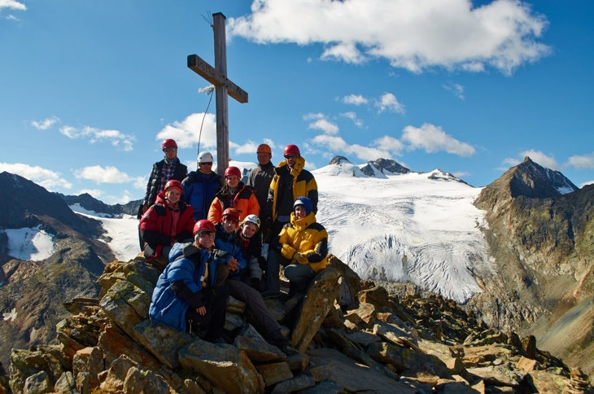

Группа на вер. Großer Trögler. Алексай Надежкин, Павел Ромашев, Илья Зудин, Александр Медведев, Татьяна Прокофьева, Анна Брусова, Влад Зуев, Яна Шамсутдинова, Елена Селиванова.
Руководитель группы. Опытный турист: совершил полтора десятка горных и лыжных походов. При работе с группой не признает авторитаризма, считая, что это мешает развитию участников, как туристов. Стиль его руководства основывается на необходимости осознания каждым участником персональной ответственности за поход в целом. Следствием этого принципа является необходимость ответственного и самостоятельного подхода к выполнению задач, стоящих перед участником, в рамках его роли.
Заместитель руководителя группы. Опытная участница, за плечами которой более десятка походов. Обычно основной задачей, стоящей перед заместителем, называют создание и поддержание дружеского климата в группе. Также подразумевают, что заместитель – поддержка и опора для руководителя. Елена, безусловно, справилась с этими непростыми, в виду разнородного состава группы, задачами. Елена также была фотографом группы – кофр с фотоаппаратом неизменно висел на ремне через ее плечо, позволяя быстро сделать фотографию внезапно открывшегося красивого вида либо технически сложного препятствия.
Начфин. Молодая участница, для которой данный поход стал первым выходом в высокогорье. С достаточно сложной ролью начфина, подразумевающую не только скрупулезное ведение бухгалтерии походной группы, но и дипломатичное решение щепетильных финансовых вопросов, справилась безукоризненно. Благодаря тренировкам и отличной физ. подготовке, отсутствие высокогорного опыта не стало для Татьяны существенной помехой в этом походе.
Завснар. Очень опытный и знающий турист. Всегда готов помочь мудрым советом и делом, в том числе в любой нестандартной для обычного участника ситуации.
Тренер группы, и реммастер по-совместительству. Самый спортивный и активный участник. Может идти далеко, долго, на высокой скорости и при этом мало уставать. Всегда готов к тому, чтобы немедленно выдвигаться куда угодно – будь то разведка, или поиск большого продуктового магазина в незнакомом городе. Алексей внес очень значимый вклад в подготовку данного похода, не ограничиваясь своей ролью, он активно проявляя инициативу в решении широкого круга вопросов, начиная с покупки биллетов и кончая поиском снаряжения.
Начпрод. Несмотря на достаточно богатый туристский опыт, она впервые оказалась в высокогорье в этом походе. С точки зрения выполнения обязанностей Татьяна – образцовый участник. Не важно, покупка ли билетов, ведение бухгалтерии, подготовка аптечки либо раскладки, Татьяна делает все самостоятельно на 5+, лишь по необходимости давая задания другим участникам. Вообще, Татьяну можно приводить в пример, как незаменимого участника группы. Она и шьет, и готовит, и наводит порядок, быстро собирается, обладает чертовски красивым голосом и наполеоновским спокойствием в любой ситуации.
Культуролог. Яна, помимо яркой внешности и чарующего голоса, обладает тонким чувством красоты. Поэтому помимо основной должности являлась так же консультантом в любых вопросах, касаемых прекрасного в походе. Широко известна в узких кругах фотографическим и художественным талантом. К вопросу культурологии подошла ответственно и могла ответить даже на самые каверзные вопросы о городах, по которым гуляла группа.
Медик группы. Быть ответственным за здоровье участников в высокогорном походе – дело серьезное. Анна справилась со своей задачей. Группа вернулась целая, невредимая и даже не сильно пострадавшая от горной болезни. Несмотря на юный возраст, ответственно подходила к обустройству быта в палатке. Одна из самых фотогеничных участниц группы. С формальной точки зрения Анна была почти новичком, за ее плечами был лишь один поход. Но это был серьезный поход на Алтай в группе Максима Турченко, которая славится своими физически и технически сложными походами. Поэтому, в этом походе Анна вполне стоила опытного участника.
Новичок, впервые совершивший поход в горы. Благодаря ответственному подходу к тренировкам, Влад овладел высокогорной техникой, необходимой для данного маршрута, на достойном уровне.
Штурман, и по-совместительству лютый враг всех фотографов. А что еще остается делать с творческими личностями, которые любуясь красотами забывают о том, сколько еще предстоит пройти?